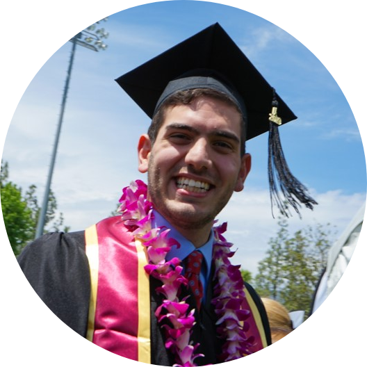

|  | Sami MalasIncoming Digital Consultant at Accenture I am a graduate of Columbia University and Claremont McKenna College where I majored in Economics and Computer Engineering. I will be working with Accenture this fall as a Digital Consultant in Boston, MA. I enjoy baking, coffee, food, travel and a good movie. |
| Claremont McKenna College, Claremont, CA Bachelors of Arts in Economics |
May 2020 |
| Columbia University, New York, NY Bachelors of Science in Computer Engineering |
May 2020 |
| American School of Dubai, Dubai, UAE High School Diploma |
June 2015 |
|
|
January 2019 - May 2020 |
|
|
May 2017 - May 2018 |
|
|
Nov 2016 - May 2019 |
|
|
Sep 2016 - May 2018 |
Strategy & Management Summer Analyst at Bank of America, New York, NY
|
June - August 2019 |
Founder & CEO at Tasl Inc, McLean, VA
|
2017 - Present |
Business Development Intern at Mahlzeit, Amsterdam, The Netherlands
|
June - August 2017 |
President & CEO at Associated Students of Claremont McKenna College, Claremont, CA
|
March 2017 - March 2018 |
Chief Operations Officer at Associated Students of Claremont McKenna College, Claremont, CA
|
March 2016 - March 2017 |